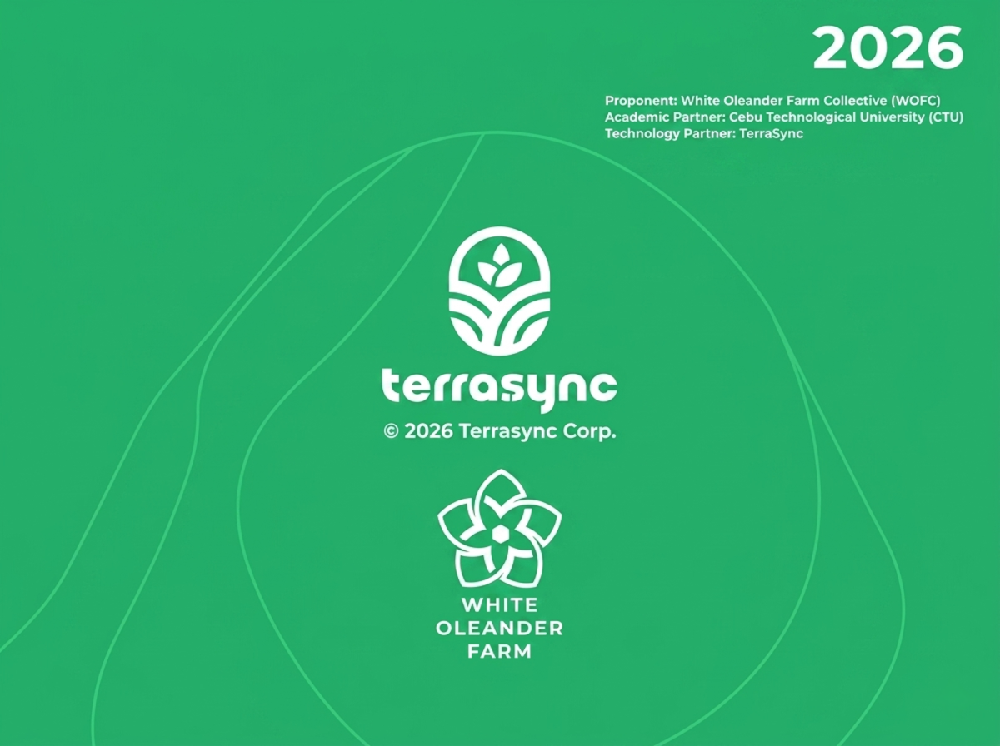

White Oleander Farm Collective × TerraSync
A cooperative-led agricultural-industrial corridor initiative designed to synchronize rural production, biomass utilization, governance, and industrial fulfillment through modular coordination infrastructure.

corridor, agriculture, or infrastructure imagery
Executive Summary
TerraSync proposes a territorial coordination model that transforms fragmented agricultural systems into synchronized operational corridors. Beginning with standardized 10-farmer atomic units, the initiative combines governance structures, sensing infrastructure, forecasting systems, and industrial coordination layers into a unified operational ecosystem.
Farmer onboarding, coordination continuity, and modular territorial governance through Roots and Rise Basecamp.
Shared operational visibility using Gomboc sensing nodes, Aether forecasting systems, and synchronized corridor monitoring.
Coordinated biomass aggregation and activated carbon fulfillment pathways for industrial applications.
The Problem
Rural economies often possess the labor, biomass, and productive capacity required for industrial participation — but lack synchronized coordination infrastructure.
Coconut byproducts such as shell, husk, and brown fiber remain undervalued due to weak post-harvest systems, disconnected timing, and unreliable throughput visibility.
The result is inconsistent industrial supply, poor forecasting continuity, and reduced bargaining leverage across territories.
Replace with agriculture or supply-chain imagery
Proposed Response
TerraSync introduces a governance-first deployment model where infrastructure emerges gradually through synchronized operational visibility and territorial coordination.
Governance emergence and farmer onboarding framework.
Environmental sensing and biological visibility infrastructure.
Digital production state and throughput forecasting systems.
Fulfillment synchronization and industrial coordination.
Deployment Framework
The corridor develops through phased operational emergence, prioritizing governance stability before technical scale.
Long-Term Vision
The TerraSync Corridor Initiative seeks to establish interoperable territorial coordination systems capable of linking governance, ecological continuity, and industrial participation into synchronized rural infrastructure.
“The future belongs to systems that restore continuity between humanity, ecology, and production.”
— Manifesto of Emancipation
Seeking alignment with cooperatives, municipalities, industrial buyers, academic institutions, and territorial infrastructure partners.